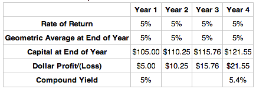
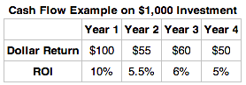
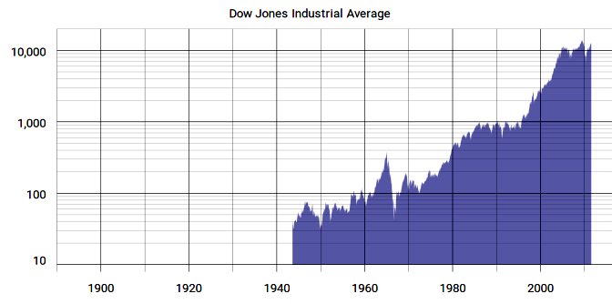
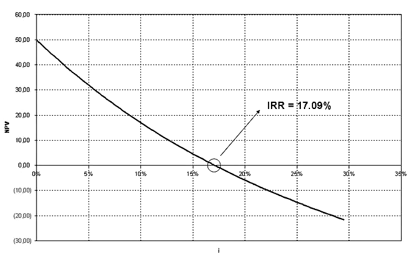
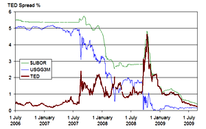
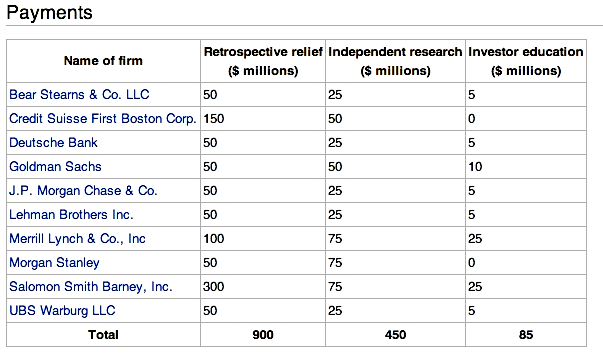

Types of stock market transactions include IPO, secondary market offerings, secondary markets, private placement, and stock repurchase.
Differentiate between the different types of stock market transactions
An initial public offering (IPO), or stock market launch, is a type of public offering where shares of stock in a company are sold to the general public, on a securities exchange, for the first time. Through this process, a private company transforms into a public company. Initial public offerings are used by companies to raise expansion capital, monetize the investments of early private investors, and become publicly traded enterprises.
A company selling shares is never required to repay the capital to its public investors. After the IPO, when shares are traded freely in the open market, money passes between public investors.
When a company lists its securities on a public exchange, the money paid by the investing public for the newly issued shares goes directly to the company (primary offering) as well as to any early private investors who opt to sell all or a portion of their holdings (secondary offering) as part of the larger IPO. An IPO, therefore, allows a company to tap into a wide pool of potential investors to provide itself with capital for future growth, repayment of debt, or working capital.
Although an IPO offers many advantages, there are also significant disadvantages. Chief among these are the costs associated with the process, and the requirement to disclose certain information that could prove helpful to competitors, or create difficulties with vendors. Details of the proposed offering are disclosed to potential purchasers in the form of a lengthy document known as a prospectus.
Most companies undertaking an IPO do so with the assistance of an investment banking firm acting in the capacity of an underwriter. Underwriters provide a valuable service, which includes help with correctly assessing the value of shares (share price), and establishing a public market for shares (initial sale).
A secondary market offering, according to the U.S. Financial Industry Regulatory Authority (FINRA), is a registered offering of a large block of a security that has been previously issued to the public. The blocks being offered may have been held by large investors or institutions, and proceeds of the sale go to those holders, not the issuing company. This is also sometimes called secondary distribution.
A secondary offering is not dilutive to existing shareholders, since no new shares are created. The proceeds from the sale of the securities do not benefit the issuing company in any way. The offered shares are privately held by shareholders of the issuing company, which may be directors or other insiders (such as venture capitalists) who may be looking to diversify their holdings. Usually, however, the increase in available shares allows more institutions to take non-trivial positions in the issuing company which may benefit the trading liquidity of the issuing company's shares.
After the initial issuance, investors can purchase from other investors in the secondary market. In the secondary market, securities are sold by and transferred from one investor or speculator to another. It is therefore important that the secondary market be highly liquid. As a general rule, the greater the number of investors that participate in a given marketplace, and the greater the centralization of that marketplace, the more liquid the market.
Private placement (or non-public offering) is a funding round of securities which are sold not through a public offering, but rather through a private offering, mostly to a small number of chosen investors. "Private placement" usually refers to the non-public offering of shares in a public company (since, of course, any offering of shares in a private company is and can only be a private offering).
Stock repurchase (or share buyback) is the reacquisition by a company of its own stock. In some countries, including the U.S. and the UK, a corporation can repurchase its own stock by distributing cash to existing shareholders in exchange for a fraction of the company's outstanding equity; that is, cash is exchanged for a reduction in the number of shares outstanding. The company either retires the repurchased shares or keeps them as treasury stock, available for re-issuance.
Companies making profits typically have two uses for those profits. Firstly, some part of profits can be distributed to shareholders in the form of dividends or stock repurchases. The remainder, termed stockholder's equity, are kept inside the company and used for investing in the future of the company. If companies can reinvest most of their retained earnings profitably, then they may do so. However, sometimes companies may find that some or all of their retained earnings cannot be reinvested to produce acceptable returns.
There are three main types of market organization that facilitate trading of securities: auction market, brokered market, and dealer market.
Differentiate between the different types of market organizations
The securities market is an economic institute where sale and purchase transactions of securities between subjects of economy take place according to demand and supply. These can be broken down into different types based on what is being traded. They are also differentiated by structure. The primary market is the part of the capital markets that deals with the issue of new securities. The secondary market, also known as the aftermarket, is the financial market where previously issued securities and financial instruments such as stock, bonds, options, and futures are bought and sold. After the initial issuance, investors can purchase from other investors in the secondary market.
The major stock exchanges are the most visible example of liquid secondary markets - in this case, for stocks of publicly traded companies. Exchanges such as the New York Stock Exchange, Nasdaq, and the American Stock Exchange provide a centralized, liquid secondary market for the investors who own stocks that trade on those exchanges. Most bonds and structured products trade "over the counter," or by phoning the bond desk of one's broker-dealer. Over-the-counter (OTC) or off-exchange trading is to trade financial instruments such as stocks, bonds, commodities, or derivatives directly between two parties. It is contrasted with exchange trading, which occurs via facilities constructed for the purpose of trading (i.e., exchanges), such as futures exchanges or stock exchanges.
In the U.S., over-the-counter trading in stock is carried out by market makers that make markets in OTCBB and Pink Sheets securities using inter-dealer quotation services such as Pink Quote (operated by Pink OTC Markets) and the OTC Bulletin Board (OTCBB). OTC stocks are not usually listed nor traded on any stock exchanges, although exchange listed stocks can be traded OTC on the third market. An over-the-counter contract is a bilateral contract in which two parties agree on how a particular trade or agreement is to be settled in the future. It is usually from an investment bank to its clients directly. Forwards and swaps are prime examples of such contracts.
There are three main types of market organization that facilitate the trading of securities: an auction market, a brokered market, and a dealer market. Hybrids of these types may also exist.
In the auction market format, buyers and sellers are brought together directly, announcing the prices at which they are willing to buy or sell securities. "Orders" are centralized by the market, so highest bidders and lowest sellers are exposed to each other. The New York Stock Exchange is a notable secondary market that is structured as an auction market. The NYSE trades in a continuous auction format, where traders can execute stock transactions on behalf of investors. They will gather around the appropriate post where a "specialist" acts as an auctioneer in an open outcry auction market environment to bring buyers and sellers together and to manage the actual auction.
Broker markets are usually only used for securities that have no public market, necessitating the middleman in the form of a broker. When a client asks their broker to fill an order, it is the broker's job to track down trading partners. The broker provides information about potential buyers and sellers and earns a commission in return. Municipal bonds are often traded in this way.
Dealer markets, also called quote-driven markets, centers on market-makers (or dealers) who provide the service of continuously bidding for securities that investors want to sell and offering securities that investors want to buy. This person or company quotes both a buy and a sell price in a financial instrument or commodity held in inventory. Dealers earn a profit on the bid-offer spread. Most foreign exchange trading firms are market makers and so are many banks. The market maker sells to and buys from its clients and is compensated by means of price differentials for the service of providing liquidity, reducing transaction costs and facilitating trade. The NASDAQ, many OTC markets, and the Forex are structured this way .
When accounting for capital gains and losses in the securities market, understanding reporting responsibilities and potential reductions is critical.
Recognize the broader points of capital gains reporting, alongside the potential reductions available
Both organizations and individual investors trade a wide variety of financial securities with the intention of gaining returns upon these investments. Securities include exchanges involving:
The securities trading markets have appreciated substantially in recent times, making the scale of investments (and subsequent reporting) more important than ever.
When considering the returns derived from these various investments, organizations and individuals must be aware of the reporting obligations in the country in which those securities are traded. Organizations like the IRS have a wide variety of taxation requisites depending upon different investment situations, and understanding these regulations is critical to ethical trading and adherence to legalities.
Most commonly, reporting of investments will fall under the reporting of capital gains. Both organizations and individuals must report any and all capital gains within a given time period. These capital gains are profits derived from the sale of investments, which is to say that existing investments where capital is still tied in the underlying asset it not taxable (though it must be reported on the balance sheet for organizations as assets).
When profits from short term investments are derived in a taxation period for an organization, this profit is reported on the income statement and taxed accordingly. Capital gains taxes can differ based on the duration and type of investment made, but for the sake of this discussion it is enough to understand that an existing investment is an asset on the balance sheet and profit from the trade of an investment should be reported as profit (or loss) on the income statement.
As with most regulatory environments, it is not a one size fits all model. There are various situations where capital gains taxes can be reduced through understanding the legislation and reporting accurately and strategically. A few examples of potential reductions or deferrals in capital gains reporting include:
While there are countless other small legislative items which may indicate tax implications on capital gains, this gives a reasonable overview of the types of considerations accountants make when considering capital gains.
The dollar return is the difference between the final value and the initial value in nominal terms.
Calculate an investment's dollar return
The dollar return of a security is the difference between the initial and ending value.
Finding the dollar return for securities that trade in open markets is a matter of finding the difference in price from year to year. For example, consider in which a \$100 security earns a stated return of 5% per year. At the end of year 1, it is worth \$105, which is \$5 more than \$100 (its value at the beginning of year 1), so the dollar return is \$5. The capital value at the end of year 2 is \$110.25, which is \$5.25 more than at the end of year 1, and \$10.25 more than at the beginning of year 1. Therefore, the dollar gain is \$10.25. This continues for each successive year.
The dollar return is the difference in value from year to year, plus the previous dollar return.
The dollar return does not take into account things like the time value of money or how the amount of return earned per year; it is simply the difference in nominal values. This means that dollar returns can provide an incomplete picture if used incorrectly. For example, suppose an investor has two investment options, both of which promise a dollar return of \$1,000,000. S/he cannot tell which option is better without knowing additional details such as the risk or how long it will take to realize the returns. If the first option has a \$1,000,000 return over two years and the other has a \$1,000,000 return over 10 years, the first option is clearly more attractive.
Dollar returns are valuable for comparing the nominal differences in investments. If two investments have similar profiles (risk, duration, etc.), than dollar returns is a useful way to compare them. The investor will always choose the option with the higher dollar return. Furthermore, the dollar return is useful because it provides an idea about how the assets of a firm will change. If a firm is looking for an additional \$50,000 from investment, they will only accept investments with a \$50,000 dollar return, regardless of the percent return.
Percentage returns show how much the value of the investment has changed in proportion to the size of the initial investment.
Calculate an investment's percentage return using CAGR
The conventional way to express the return on a security (and investments in general) is in percentage terms. This is because it does not only matter how much money was earned on the investment, it matters how much was earned in proportion to the cost.
There are two types of percentage returns: total and annual. Total returns calculate how much the value of the investment has changed since it was first purchased, while annual returns calculate how much the value changed each year. When the length of time of the investment is one year, the total and annual returns are equivalent.
Total Returns
The total percentage return is based off of the final value (Vf), the initial value (Vi), and all dividend payments or additional incomes (D). If the investment is a security such as a stock, the final value is the sales price, the initial value is the purchase price, and D is the sum of all dividends received.
$Return\quad =\quad \frac { V_{ f }-{ V }_{ i }+D }{ { V }_{ i } }$
This type of return is also called the return on investment (ROI), where the numerator is the dollar return.
Annual Returns
In , the ROI is calculated for each individual year by dividing the dollar return by the initial value of \$1,000. To find the return for the security overall, simply sum the dollar returns and divide by the initial value. The ROI can be annualized by dividing by the number of years between the purchase and sale of the security. This is the arithmetic mean of the return.
The ROI is the percentage return, and is calculated by dividing the dollar return by the initial value of the investment (\$1,000).
However, this does not fully take into consideration compounding. To do so, analysts use other formulas, like the compound annual growth rate (CAGR):
$CAGR={ \left( \frac { V_{ f } }{ { V }_{ i } } \right) }^{ \frac { 1 }{ t } }-1$
In this case, the only variable that differs from the previous formula is t, which is the number of years between the beginning and end of the investment. CAGR is a way of measuring the return per year. It is widely used because it allows for the easy comparison of the growth rates of multiple investments.
Another common method for finding the annual return is to calculate the internal rate of return (IRR). Recall that the IRR is the discount rate at which the net present value (NPV) equals 0.
Markets and securities may follow general trends, but exogenous factors (such as macroeconomic changes) cause variability and volatility.
Describe how historical returns can be used to predict future performance
Historical analysis of markets and of specific securities is a useful tool for investors, but it does not predict the future of the market. There are general trends and expectations of future behavior, but they are just generalizations. For example, the Dow Jones Industrial Average (DJIA) has generally followed an upward trend from 1900-2009 . However, an investor who looked at this graph in early 1929 and made the decision to invest because s/he would be guaranteed to make money was in for a shock when the market crashed in October 29, 1929. Past performance is not a guarantee of future performance.
The Dow Jones Industrial Average has generally increased overall since 1900, but its past performance is not a guarantee of future performance.
Inherent in all markets is something called "systemic risk. " Systemic risk is the risk of collapse of an entire financial system or entire market, as opposed to risk associated with any one individual entity, group, or component of a system. Macroeconomic forces, such as the Great Depression, affect the entire stock market and can't be predicted from past market performance. The failure of one company affects all the companies who purchase from it or sell to it, which in turn affects all the companies that rely on them. These types of interlinkages are a cause of the overall market variability and volatility.
Furthermore, market variability and volatility can be the cause of what John Maynard Keynes called animal spirits. Animal spirits are the emotions felt by investors who affect markets. Expectations of investors affect how they act, which in turn affects the markets. If investors are feeling optimistic, for example, the market may go up, even without an improvement in the financials of the underlying companies.
Markets and stocks are affected by many factors beyond the information in their financial statements and past performance. Historical returns may provide an idea of the overall trend, but certainly are not enough to accurately predict future performance.
Average returns are commonly found using average ROI, CAGR, or IRR.
Differentiate between the different methods for calculating the average return of an investment
The average return of an investment can be calculated a number of ways. The three main methods are
For all three methods, the higher the rate, the more desirable the investment.
To calculate the total ROI of an investment, simply divide the total dollar returns of the investment by the initial value. The average ROI is the arithmetic average: divide the total ROI by the number of periods. If the purchase of a stock led to an ROI of 15% over 5 years, the average ROI is 3% per year. This is a simple way to calculate the average return. It is useful for certain securities such as bonds. If the only source of return on a bond is the coupon payments, then this is an accurate method. A bond purchased at par that pays a 5% coupon per year, will have a return of 25% over 5 years. However, this is a very special case. Average ROI generally does not calculate the actual average rate of return, because it does not incorporate compounding returns. A stock that appreciates by 3% per year would not actually be worth 15% more over 5 years, because the gains compound.
CAGR stands for compound annual growth rate. It is calculated by the following formula where Vf is the future value, Vi is the initial value, and t is the number of years:
CAGR, unlike average ROI, does consider compounding returns. CAGR is derived from the compounding interest formula, FV=PV(1+i)t, where PV is the initial value, FV is the future value, i is the interest rate, and t is the number of periods. The CAGR formula is what results when solving for i: the interest rate becomes CAGR, FV becomes Vf, PV becomes Vi, and the number of periods is generally assumed to be in years.
CAGR is very useful for finding the rate of return that the investment would have to earn every year for the life of the investment to turn the initial value into the future value over the given time frame.
The internal rate of return (IRR) is another commonly used method for calculating the average return . IRR is the discount rate at which the net present value (NPV) is equal to 0. Using IRR allows for easy comparison between investment options. It is also known as the effective interest rate.
The IRR is calculated by finding the discount rate at which the NPV of the investment equals 0.
Efficient-market hypothesis (EMH) asserts that financial markets are informationally efficient and should therefore move unpredictably.
Describe what an efficient market looks like
In finance, the efficient-market hypothesis (EMH) asserts that financial markets are "informationally efficient. " As a result, one cannot consistently achieve returns in excess of average market returns on a risk-adjusted basis, given the information available at the time the investment is made.
There are three major versions of the hypothesis: "weak," "semi-strong," and "strong. " The weak-form EMH claims that prices on traded assets (e.g., stocks, bonds, or property) already reflect all past publicly available information. The semi-strong-form EMH claims both that prices reflect all publicly available information and that prices instantly change to reflect new public information. The strong-form EMH also claims that prices instantly reflect even hidden or "insider" information. Critics have blamed the belief in rational markets for much of the late-2000's financial crisis. In response, proponents of the hypothesis have stated that market efficiency does not mean having no uncertainty about the future. Market efficiency is a simplification of the world which may not always hold true. The market is practically efficient for investment purposes for most individuals.
Historically, there was a very close link between EMH and the random-walk model and then the Martingale model. The random character of stock market prices was first modelled by Jules Regnault, a French broker, in 1863 and then by Louis Bachelier, a French mathematician, in his 1900 PhD thesis, "The Theory of Speculation. " His work was largely ignored until the 1950's; however, beginning in the 1930's scattered, independent work corroborated his thesis. A small number of studies indicated that U.S. stock prices and related financial series followed a random walk model. Research by Alfred Cowles in the '30s and '40s suggested that professional investors were in general unable to outperform the market .
The efficient-market hypothesis emerged as a prominent theory in the mid-1960's. Paul Samuelson had begun to circulate Bachelier's work among economists. In 1964 Bachelier's dissertation along with the empirical studies mentioned above were published in an anthology edited by Paul Cootner. In 1965 Eugene Fama published his dissertation arguing for the random walk hypothesis, and Samuelson published a proof for a version of the efficient-market hypothesis. In 1970 Fama published a review of both the theory and the evidence for the hypothesis. The paper extended and refined the theory, included the definitions for three forms of financial market efficiency: weak, semi-strong, and strong.
It has been argued that the stock market is "micro efficient," but not "macro inefficient. " The main proponent of this view was Samuelson, who asserted that the EMH is much better suited for individual stocks than it is for the aggregate stock market. Research based on regression and scatter diagrams has strongly supported Samuelson's dictum.
The EMH asserts that financial markets are informationally efficient with different implications in weak, semi-strong, and strong form.
Differentiate between the different versions of the Efficient Market Hypothesis
The efficient-market hypothesis (EMH) asserts that financial markets are "informationally efficient. " In consequence of this, one cannot consistently achieve returns in excess of average market returns on a risk-adjusted basis, given the information available at the time the investment is made.
There are three major versions of the hypothesis: weak, semi-strong, and strong.
In weak-form efficiency, future prices cannot be predicted by analyzing prices from the past. Excess returns cannot be earned in the long run by using investment strategies based on historical share prices or other historical data. Technical analysis techniques will not be able to consistently produce excess returns, though some forms of fundamental analysis may still provide excess returns. Share prices exhibit no serial dependencies, meaning that there are no "patterns" to asset prices. This implies that future price movements are determined entirely by information not contained in the price series. Hence, prices must follow a random walk. This "soft" EMH does not require that prices remain at or near equilibrium, but only that market participants not be able to systematically profit from market "inefficiencies. " However, while EMH predicts that all price movement (in the absence of change in fundamental information) is random (i.e., non-trending), many studies have shown a marked tendency for the stock markets to trend over time periods of weeks or longer and that, moreover, there is a positive correlation between degree of trending and length of time period studied (but note that over long time periods, the trending is sinusoidal in appearance). Various explanations for such large and apparently non-random price movements have been promulgated.
In semi-strong-form efficiency, it is implied that share prices adjust to publicly available new information very rapidly and in an unbiased fashion, such that no excess returns can be earned by trading on that information. Semi-strong-form efficiency implies that neither fundamental analysis nor technical analysis techniques will be able to reliably produce excess returns. To test for semi-strong-form efficiency, the adjustments to previously unknown news must be of a reasonable size and must be instantaneous. To test for this, consistent upward or downward adjustments after the initial change must be looked for. If there are any such adjustments it would suggest that investors had interpreted the information in a biased fashion and, hence, in an inefficient manner.
In strong-form efficiency, share prices reflect all information, public and private, and no one can earn excess returns. If there are legal barriers to private information becoming public, as with insider trading laws, strong-form efficiency is impossible, except in the case where the laws are universally ignored. To test for strong-form efficiency, a market needs to exist where investors cannot consistently earn excess returns over a long period of time. Even if some money managers are consistently observed to beat the market, no refutation even of strong-form efficiency follows–with hundreds of thousands of fund managers worldwide, even a normal distribution of returns (as efficiency predicts) should be expected to produce a few dozen "star" performers.
The limitations of EMH include overconfidence, overreaction, representative bias, and information bias.
Discuss the limitations of the Efficient Market Hypothesis
Investors and researchers have disputed the Efficient Market Hypothesis both empirically and theoretically. Behavioral economists attribute the imperfections in financial markets to a combination of cognitive biases such as overconfidence, overreaction, representative bias, information bias, and various other predictable human errors in reasoning and information processing. These have been researched by psychologists such as Daniel Kahneman, Amos Tversky, Richard Thaler, and Paul Slovic. These errors in reasoning lead most investors to avoid value stocks and buy growth stocks at expensive prices, which allow those who reason correctly to profit from bargains in neglected value stocks and the excessive selling of growth stocks.
Empirical evidence has been mixed, but has generally not supported strong forms of the Efficient Market Hypothesis. According to a publication by Dreman and Berry from 1995, low P/E stocks have greater returns. In an earlier paper Dreman also refuted the assertion by Ray Ball that these higher returns could be attributed to higher beta. Ball's research had been accepted by Efficient Market theorists as explaining the anomaly in neat accordance with modern portfolio theory.
Speculative economic bubbles are an obvious anomaly, in that the market often appears to be driven by buyers operating on irrational exuberance, who take little notice of underlying value. These bubbles are typically followed by an overreaction of frantic selling, allowing shrewd investors to buy stocks at bargain prices. Rational investors have difficulty profiting by shorting irrational bubbles because, as John Maynard Keynes commented, "markets can remain irrational far longer than you or I can remain solvent. " Sudden market crashes, like the one that occurred on Black Monday in 1987, are mysterious from the perspective of efficient markets, but allowed as a rare statistical event under the Weak-form of EMH. One could also argue that if the hypothesis is so weak, it should not be used in statistical models due to its lack of predictive behavior.
Further empirical work has highlighted the impact transaction costs have on the concept of market efficiency, with much evidence suggesting that any anomalies pertaining to market inefficiencies are the result of a cost benefit analysis made by those willing to incur the cost of acquiring the valuable information in order to trade on it. Additionally the concept of liquidity is a critical component to capturing "inefficiencies" in tests for abnormal returns. Any test of this proposition faces the joint hypothesis problem, where it is impossible to ever test for market efficiency, since to do so requires the use of a measuring stick against which abnormal returns are compared-- in other words, one cannot know if the market is efficient if one does not know if a model correctly stipulates the required rate of return. Consequently, a situation arises where either the asset pricing model is incorrect or the market is inefficient, but one has no way of knowing which is the case.
The financial crisis of 2007–2012 has led to renewed scrutiny and criticism of the hypothesis. Market strategist Jeremy Grantham has stated flatly that the EMH is responsible for the current financial crisis, claiming that belief in the hypothesis caused financial leaders to have a "chronic underestimation of the dangers of asset bubbles breaking. " Noted financial journalist Roger Lowenstein blasted the theory, declaring "the upside of the current Great Recession is that it could drive a stake through the heart of the academic nostrum known as the Efficient-Market Hypothesis. " Former Federal Reserve chairman Paul Volcker chimed in, saying, "[it is] clear that among the causes of the recent financial crisis was an unjustified faith in rational expectations and market efficiencies. "
The strong form of EMH is diminished by the 2008 crisis
The financial crisis has led Richard Posner, a prominent judge, University of Chicago law professor, and innovator in the field of Law and Economics, to back away from the hypothesis and express some degree of belief in Keynesian economics. Posner accused some of his Chicago School colleagues of being "asleep at the switch," claiming that "the movement to deregulate the financial industry went too far by exaggerating the resilience-- the self healing powers-- of laissez-faire capitalism. " Others, such as Fama himself, said that the hypothesis held up well during the crisis and that the markets were a casualty of the recession, not the cause of it. Despite this, Fama has conceded that "poorly informed investors could theoretically lead the market astray" and that stock prices could become "somewhat irrational" as a result.
Critics have suggested that financial institutions and corporations have been able to decrease the efficiency of financial markets by creating private information and reducing the accuracy of conventional disclosures, and by developing new and complex products which are challenging for most market participants to evaluate and correctly price.
The Securities Act of 1933 ensures investors receive complete and accurate information before they invest.
Describe how the Securities Act of 1933 regulates stock markets
The Securities Act of 1933 (also known as the '33 Act) is essentially a consumer protection law for "retail" investors (i.e. not money managers, foundations, pensions, etc.)
The Act's objectives are to provide investors with material, financial, and other corporate information about issuers of public securities (i.e. stocks and bonds), and to prevent fraud in the offering of such securities. The primary purpose of the '33 Act is to ensure that buyers of securities receive complete and accurate information before they invest.
Unless they qualify for an exemption, securities offered or sold to the public in the U.S. must be registered by filing a registration statement with the SEC. Although the law is written to require registration of securities, it is more useful as a practical matter to consider the requirement to be that of registering offers and sales. If person A registers a sale of securities to person B, and then person B seeks to resell those securities, person B must still either file a registration statement or find an available exemption.
Many transactions are exempt from regulation under the Securities Act. Section 4 of the Act limits its application to public offerings (according to SEC guidelines, more than 25 offerees) by issuers and their underwriters (i.e. investment banks). This means that the Act primarily applies to companies offering securities to the public, and not to transactions between investors or to sales of stock to small groups of investors (i.e. private placements. )
The prospectus, which is the document through which an issuer's securities are marketed to a potential investor, is included as part of the registration statement. The SEC prescribes the relevant forms on which an issuer's securities must be registered. Among other things, registration forms call for:
For public offerings, the main requirement of the Securities Act is registration. An issuer must prepare an extensive statement describing the securities to be offered and detailing the nature of the issuer's business. Once this statement is registered with and approved by the SEC, its data and forecasts are placed in a prospectus for potential investors. Any offering of the securities by the issuer or underwriter must thereafter be accompanied by the prospectus.
Rule 144, promulgated by the SEC under the 1933 Act, permits, under limited circumstances, the sale of restricted and controlled securities without registration. In addition to restrictions on the minimum length of time for which such securities must be held and the maximum volume permitted to be sold, the issuer must agree to the sale. If certain requirements are met, Form 144 must be filed with the SEC. Often, the issuer requires that a legal opinion be given indicating that the resale complies with the rule. The amount of securities sold during any subsequent three-month period generally does not exceed any of the following limitations:
Regulation S is a "safe harbor" that defines when an offering of securities is deemed to be executed in another country and therefore not be subject to the registration requirement under section 5 of the 1933 Act. The regulation includes two safe harbor provisions: an issuer safe harbor and a resale safe harbor. In each case, the regulation demands that offers and sales of the securities be made outside the United States and that no offering participant (which includes the issuer, the banks assisting with the offer, and their respective affiliates) engage in "directed selling efforts. " In the case of issuers for whose securities there is substantial U.S. market interest, the regulation also requires that no offers and sales be made to U.S. persons (including U.S. persons physically located outside the United States).
The Securities Exchange Act of 1934 is a law governing the secondary trading of securities, financial markets and their participants.
Define how the Securities Exchange Act of 1934 regulates the US securities markets
The Securities Exchange Act of 1934 (also called the Exchange Act, '34 Act, or Act of '34) is a law governing the secondary trading of securities, including stocks, bonds, and debentures, in the United States of America. It was a sweeping piece of legislation. The Act and related statutes form the basis for the regulation of the financial markets and their participants in the United States. The 1934 Act also established the Securities and Exchange Commission (SEC), the agency primarily responsible for enforcement of United States federal securities law.
While the Securities Act is very limited in scope, the Securities Exchange Act (also known as the Exchange Act or 1934 Act) is much broader. It regulates stock exchanges, brokers, dealers, and even private traders.
Companies raise billions of dollars by issuing securities in what is known as the primary market. In contrast with the Securities Act of 1933, which regulates these original issues, the Securities Exchange Act of 1934 regulates the secondary trading of those securities between persons often unrelated to the issuer, in most cases through brokers or dealers. Trillions of dollars are made and lost each year through trading in the secondary market.
One area subject to 34 Act regulation is the actual securities exchange -- the physical place where people purchase and sell securities (stocks, bonds, notes of debenture). Some of the well known exchanges include the New York Stock Exchange, the American Stock Exchange, and regional exchanges like the Cincinnati Stock Exchange, Philadelphia Stock Exchange and Pacific Stock Exchange. At those places, agents of the exchange or specialists, act as middlemen for the competing interests to buy and sell securities. An important function of the specialist is to inject liquidity and price continuity into the market. Given that people come to the exchange to easily acquire securities or to easily dispose of a portfolio of securities, the specialist's role is important to the exchange.
The '34 Act also regulates broker-dealers without a status for trading securities. A telecommunications infrastructure was developed and allows for for trading without a physical location. Previously these brokers would find stock prices through newspaper printings and conduct trades verbally by telephone. Today, a digital information network connects these brokers. This system is called NASDAQ, standing for the National Association of Securities Dealers Automated Quotation System.
In 1938, the Exchange Act was amended by the Maloney Act, which authorized the formation and registration of national securities associations to supervise the conduct of their members subject to the oversight of the SEC. That amendment led to the creation of the National Association of Securities Dealers, Inc. - the NASD, which is a Self-Regulatory Organization (or SRO). The NASD had primary responsibility for the oversight of brokers and brokerage firms, and later, the NASDAQ stock market.
In the last 30 years, brokers have created two additional systems for trading securities. The alternative trading system, or ATS, is a quasi exchange where stocks are commonly purchased and sold through a smaller, private network of brokers, dealers, and other market participants. The ATS is different from exchanges and associations in that the volumes for ATS trades are comparatively low, and the trades tend to be controlled by a small number of brokers or dealers. ATS acts as a niche market, a private pool of liquidity. Reg ATS, an SEC regulation issued in the late 1990s, requires these small markets to 1) register as a broker with the NASD, 2) register as an exchange, or 3) operate as an unregulated ATS, staying under low trading caps.
While the '33 Act recognizes that timely information about the issuer is vital to effective pricing of securities, the Act's disclosure requirement (the registration statement and prospectus) is a one-time affair. The '34 Act extends this requirement to securities traded in the secondary market. Provided that the company has more than a certain number of shareholders and has a certain amount of assets (500 shareholders, above \$10 million in assets, per sections 12, 13, and 15 of the Act), the '34 Act requires that issuers regularly file company information with the SEC on certain forms (the annual 10-K filing and the quarterly 10-Q filing).
While the '33 Act contains an antifraud provision (Section 17), when the '34 Act was enacted, questions remained about the reach of that antifraud provision and whether a private right of action—that is, the right of an individual citizen to sue an issuer of stock or related market actor, as opposed to government suits—existed for purchasers.
The 1975 amendments are to establish a national market system for the nationwide clearance and settlement of securities transactions.
Define how the Securities Act Amendments of 1975 regulate U.S. stock markets
The 1975 amendments, also called the National Exchange Market System Act, directed the securities and exchange commission to work with the industry toward establishing a national market system together with a system for the nationwide clearance and settlement of securities transactions.
A national market system plan (or NMS plan) is a structured method of transmitting securities transactions in real-time. In the United States, national market systems are governed by section 11A of the Securities Exchange Act of 1934.
In addition to processing the transactions themselves, these plans also show the price and volume data for these transactions. Information on each securities trade is sent to a central network at the Securities Industry Automation Corporation (SIAC) where it is then distributed and consolidated with other trades on the same "tape".
The Securities Industry Automation Corporation (SIAC) is a subsidiary of the NYSE Euronext. Its purpose is to provide technical services for the exchanges themselves, members and other financial institutions. In this role, SIAC provides the computers and other systems required to run the exchanges. It also owns communication lines and hardware that provide real-time quotes and transaction information to all market participants from the Consolidated Tape/Ticker System (CTS), Consolidated Quotation System (CQS), and Options Price Reporting Authority (OPRA).
The National Market System (NMS) is the national system for trading equities in the United States.
Regulation NMS (or Reg NMS — Regulation National Market System) is a regulation promulgated and defined by the United States Securities and Exchange Commission (SEC) as "a series of initiatives designed to modernize and strengthen the national market system for equity securities. " It was established in 2007 and seeks to foster both "competition among individual markets and competition among individual orders" in order to promote efficient and fair price formation across securities markets. In 1972, before the SEC began its pursuit of a national market system, the market for securities was quite fragmented. The same stock sometimes traded at different prices at different trading venues, and the NYSE ticker tape did not report transactions of NYSE-listed stocks that took place on regional exchanges or on other over-the-counter securities markets. This fragmentation made it difficult for traders to compare prices of stocks. In 1975, Congress authorized the SEC to facilitate a national market system.
In 2005, the rules promoting the national market system were consolidated into REG NMS. Some of the more notable rules include:
The order protection rule has generated controversies since it requires traders to transact on a trading venue at the lowest price rather than on a venue that offers the quickest execution or the most reliability. Thus, some have described it as an improper government intervention into private business affairs. Defenders of the rule argue that it really just requires what brokers should be doing if they are acting in their customer's best interests. Still, others have argued that the rule is too lax because it only protects the quotes at the top of the book.
The Sarbanes–Oxley Act is to set new or enhanced standards for all U.S. public company boards, management, and public accounting firms.
Identify the responsibilities imposed on companies by the Sarbanes-Oxley Act of 2002
The Sarbanes–Oxley Act of 2002 is a federal law that set new or enhanced standards for all public company boards, management, and public accounting firms in the United States. It is also known as the Public Company Accounting Reform and Investor Protection Act (in the Senate) and Corporate and Auditing Accountability and Responsibility Act (in the House) and more commonly called Sarbanes–Oxley, Sarbox or SOX. It It is named after sponsors U.S. Senator Paul Sarbanes (D-MD) and U.S. Representative Michael G. Oxley (R-OH). As a result of SOX, top management must now individually certify the accuracy of financial information. In addition, penalties for fraudulent financial activity are much more severe. SOX also increased the independence of the outside auditors who review the accuracy of corporate financial statements, and increased the oversight role of boards of directors.
The bill was enacted as a reaction to a number of major corporate and accounting scandals including those affecting Enron, Tyco International, Adelphia, Peregrine Systems, and WorldCom. These scandals, which cost investors billions of dollars when the share prices of affected companies collapsed, shook public confidence in the nation's securities markets.
In response to the perception that stricter financial governance laws are needed, SOX-type laws have been subsequently enacted in Japan, Germany, France, Italy, Australia, India, South Africa, and Turkey.
Title I provides independent oversight of public accounting firms providing audit services (auditors). It also creates a central oversight board tasked with registering auditors, defining the specific processes and procedures for compliance audits, inspecting and policing conduct and quality control, and enforcing compliance with the specific mandates of SOX.
Title II consists of nine sections and establishes standards for external auditor independence, to limit conflicts of interest. It also addresses new auditor approval requirements, audit partner rotation, and auditor reporting requirements. It restricts auditing companies from providing non-audit services (e.g., consulting) for the same clients.
Title III consists of eight sections and mandates that senior executives take individual responsibility for the accuracy and completeness of corporate financial reports. It enumerates specific limits on the behaviors of corporate officers and describes specific forfeitures of benefits and civil penalties for non-compliance.
Title IV describes enhanced reporting requirements for financial transactions, including off-balance-sheet transactions, pro-forma figures and stock transactions of corporate officers. It requires internal controls for assuring the accuracy of financial reports and disclosures, and mandates both audits and reports on those controls.
Title V consists of only one section, which includes measures designed to help restore investor confidence in the reporting of securities analysts. It defines the codes of conduct for securities analysts and requires disclosure of knowable conflicts of interest.
Title VI defines practices to restore investor confidence in securities analysts. It also defines the SEC's authority to censure or bar securities professionals from practice and defines conditions under which a person can be barred from practicing as a broker, advisor, or dealer.
Title VII consists of five sections and requires the Comptroller General and the SEC to perform various studies and report their findings.
Title VIII describes specific criminal penalties for manipulation, destruction or alteration of financial records or other interference with investigations, while providing certain protections for whistle-blowers.
Title IX increases the criminal penalties associated with white-collar crimes and conspiracies. It recommends stronger sentencing guidelines and specifically adds failure to certify corporate financial reports as a criminal offense.
Title X consists of one section. Section 1001 states that the Chief Executive Officer should sign the company tax return.
Title XI consists of seven sections. Section 1101 recommends a name for this title as "Corporate Fraud Accountability Act of 2002". It identifies corporate fraud and records tampering as criminal offenses and joins those offenses to specific penalties. It also revises sentencing guidelines and strengthens their penalties. This enables the SEC to resort to temporarily freezing transactions or payments that have been deemed "large" or "unusual".
Debate continues over the perceived benefits and costs of SOX. Opponents of the bill claim it has reduced America's international competitive edge against foreign financial service providers, saying SOX has introduced an overly complex regulatory environment into U.S. financial markets. Proponents of the measure say that SOX has been a "godsend" for improving the confidence of fund managers and other investors with regard to the veracity of corporate financial statements.
The Global Settlement was an enforcement agreement to address issues of conflict of interest within the SEC and other big investment companies.
Describe how the Global Research Settlement addressed conflicts of interest in the market
The Global Settlement was an enforcement agreement reached on April 28, 2003 between the Securities and Exchange Commission (SEC), National Association of Securities Dealers (NASD), New York Stock Exchange (NYSE), and ten of the United States's largest investment firms. The agreement was meant to address issues of conflict of interest within their businesses.
The central issue at hand that had previously been decided in court was the conflict of interest between the investment banking and analysis departments of ten of the largest investment firms in the United States. The investment firms involved in the settlement had all engaged in actions and practices that had aided and abetted the inappropriate influence of their research analysts by their investment bankers seeking lucrative fees. A typical violation addressed by the settlement was the case of CSFB and Salomon Smith Barney, which were alleged to have engaged in inappropriate spinning of "hot" IPOs and issued fraudulent research reports in violation of various sections within the Securities Exchange Act of 1934. Similarly, UBS Warburg and Piper Jaffray were alleged to have received payments for investment research without disclosing such payments in violation of the Securities Act of 1933.
The table shows the payments of each company
As part of the settlement decision published on December 20, 2002, several regulations designed to prevent abuse stemming from pressure by investment bankers on analysts to provide "favorable" appraisals were put in place. Most importantly, these firms would have to literally insulate their banking and analysis departments from each other physically and with Chinese walls. In addition, budget allocation to management in research departments will be independent of investment departments. Research analysts will also be prohibited from going on pitches and roadshows with bankers during advertising and promotion of IPOs. Similarly, the Global Settlement also increased the IPO "quiet period" from 25 days to 40 days. Finally, research analysts' historical ratings must be disclosed and made available.
Other than these regulatory actions, the firms involved in the settlement were required to pay fines to their investors, to fund investor education, and to pay for independent third-party market research. A total fine of \$1.435 billion was assessed and is described in the table below.
{kind=link}
{kind=link}
{kind=link}
{kind=link}
{kind=link}
{kind=link}
{kind=link}